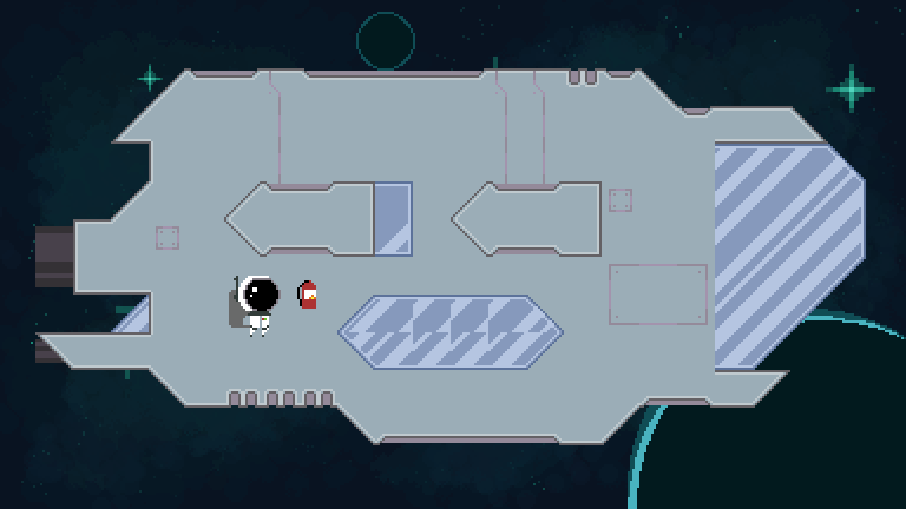

Week 2 - Style Finalization & Gameplay Focus

Style Finalization & Gameplay Focus
This week, we finalized the art style for the game, as well as narrow down the key gameplay mechanics
that form our core loop.
As soon as we settled on the top-down 2D pixel art style, I got to work starting to create the spaceship
environment where the main gameplay takes place. My first iteration was rather rough as I was still
figuring out the style, but my second pass turned out much better. We're using a tile-based system
for the game in order for individual ship parts to be destroyed, and so I split the ship into smaller
segments that we can lay out in Unity.

 Iteration 1 of the ship environment. It was constructing using this basic tileset I created to allow
for modular ship parts. Some of the glass was distorted and I didn't really like the shape of the ship,
so I went back to the drawing board for iteration 2.
This iteration improved upon the overall silhouette of the ship, as I didn't limit myself to the tileset,
and decided that I would create the tileset around the ship instead. I also included some fire
to showcase the damage mechanics of the game.
It was around this time that we started to finalize the gameplay mechanics. After some feedback, we
wanted to lean heavily into the moment-to-moment gameplay of repairing the ship and fending off hostile
aliens, without forcing the player to be actively swapping between tasks. To achieve this, we decided to
remove weapons from the game entirely, and instead allow the player to throw whatever tool they have
on hand to deal damage, among other effects. We also wanted each item to have multiple uses, not just as
a Macguffin for repairing this ship. For example, the fire extinguisher can be used to propel the player
around the ship similarly to a booster pack. Pictured below is a prototype I threw together in Unity.
Iteration 1 of the ship environment. It was constructing using this basic tileset I created to allow
for modular ship parts. Some of the glass was distorted and I didn't really like the shape of the ship,
so I went back to the drawing board for iteration 2.
This iteration improved upon the overall silhouette of the ship, as I didn't limit myself to the tileset,
and decided that I would create the tileset around the ship instead. I also included some fire
to showcase the damage mechanics of the game.
It was around this time that we started to finalize the gameplay mechanics. After some feedback, we
wanted to lean heavily into the moment-to-moment gameplay of repairing the ship and fending off hostile
aliens, without forcing the player to be actively swapping between tasks. To achieve this, we decided to
remove weapons from the game entirely, and instead allow the player to throw whatever tool they have
on hand to deal damage, among other effects. We also wanted each item to have multiple uses, not just as
a Macguffin for repairing this ship. For example, the fire extinguisher can be used to propel the player
around the ship similarly to a booster pack. Pictured below is a prototype I threw together in Unity.
 We then fleshed out the core loop of our game further. Using the ship asset, I created an annotated
mockup of the main gameplay environment, showcasing a non-exhaustive list of various hazards and interactions
within our game.
We then fleshed out the core loop of our game further. Using the ship asset, I created an annotated
mockup of the main gameplay environment, showcasing a non-exhaustive list of various hazards and interactions
within our game.
 Lastly, I started revamping some of the older concept art of the player character and some items to better
reflect the current state of the game.
Lastly, I started revamping some of the older concept art of the player character and some items to better
reflect the current state of the game.
 Overall, I made a lot of progress this week regarding the art style and gameplay focus of our game. Next
week, I plan to start working on more of the sprites for the game, focusing on the hostile aliens, and
the asteroids that strike the ship.
Overall, I made a lot of progress this week regarding the art style and gameplay focus of our game. Next
week, I plan to start working on more of the sprites for the game, focusing on the hostile aliens, and
the asteroids that strike the ship.